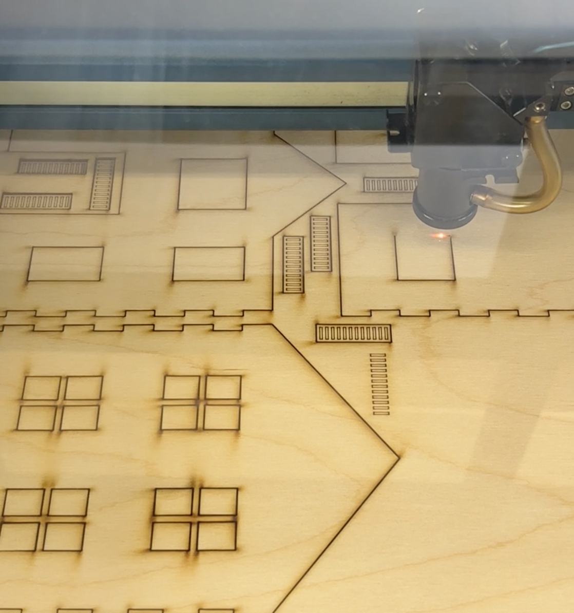
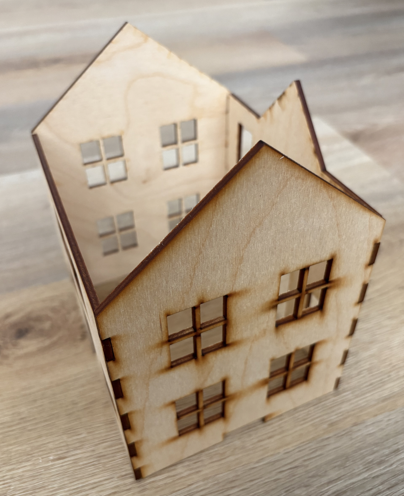

Bright House is a work in process laser cut project that takes inspiration from my grandma’s house and Christmas decorations. The house is a miniature version of my grandma’s house and illuminated with fairy lights. The components of the house were designed in fusion and laser cutted out of plywood. The four walls were designed with finger joints to click into place, while the details were attached with glue. Finally, the house was finished with white and pastel paints.

